Российский университет дружбы народов, Москва,
Россия
21 ноября 2026
Информация
Докладчик
Глушенок Анна Александровна
Российский университет дружбы народов
Группа: НПИбд-01-24
Студенческий билет: 1132246844
Цель работы
Получение навыков по управлению системным временем и настройке
синхронизации времени.
Задание
Изучите команды по настройке параметров времени.
Настройте сервер в качестве сервера синхронизации времени для
локальной сети.
Напишите скрипты для Vagrant, фиксирующие действия по установке и
настройке NTP-сервера и клиента.
Выполнение лабораторной работы
Настройка параметров времени
Настройка параметров времени
На server и client смотрим параметры настройки даты и времени
(видим, что оба узла находятся в часовом поясе UTC, служба синхронизации
времени (NTP) активна, системные часы успешно синхронизированы (System
clock synchronized: yes).
На server и client смотрим текущее системное время (видим, что вывод
команды date подтверждает системное время, показанное в timedatectl;
небольшое расхождение связано с последовательным вводом команд).
На server и client смотрим аппаратное время (видим, что вывод
команды hwclock подтверждает аппаратное время, показанное в timedatectl;
небольшое расхождение связано с последовательным вводом команд).
Настройка параметров времени
Выполняем для server:
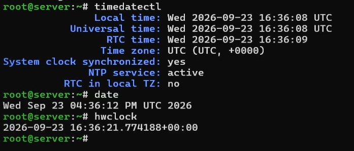
Figure 1: параметры времени,
server
Настройка параметров времени
Выполняем для client:
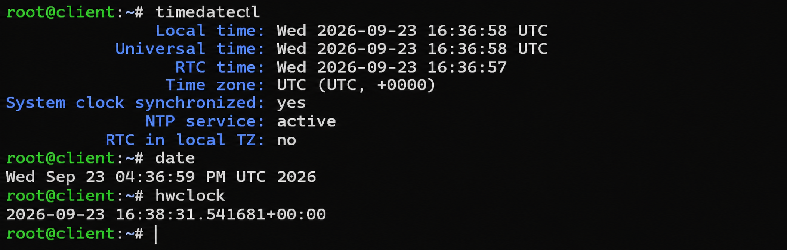
Figure 2: параметры времени,
server
Управление синхронизацией времени
Управление синхронизацией времени
Устанавливаем на server и client ПО chrony.
Проверяем источники времени на server и client (видим, что и servsr,
и client находятся в конфигурации “по умолчанию”; они НЕ связаны друг с
другом, и независимо синхронизируют часы с публичными
NTP-серверами).
Выполняем для server:
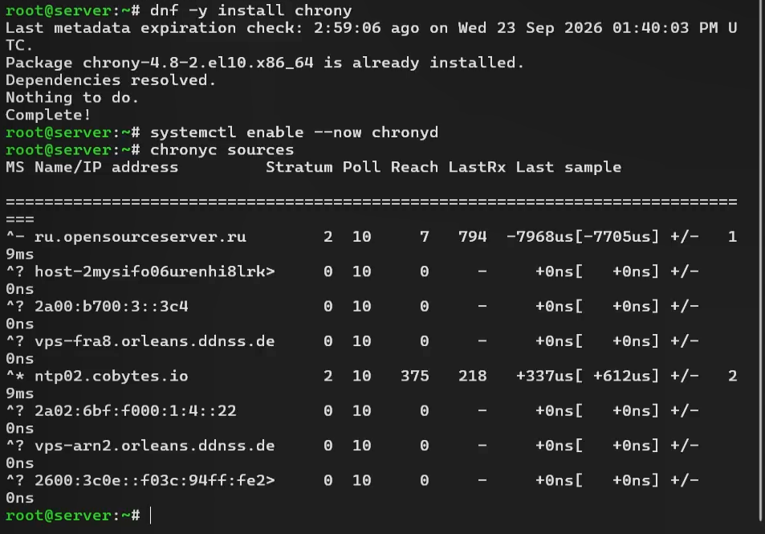
Figure 3: источники времени,
server
Управление синхронизацией времени
Выполняем для client:
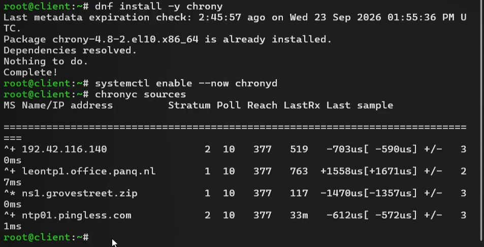
Figure 4: источники времени,
client
Управление синхронизацией времени
На server вносим изменения в файл /etc/chrony.conf.
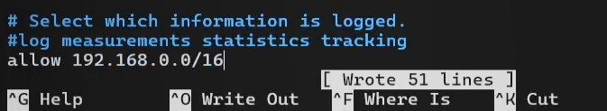
Figure 5: внесение изменений в
chrony.conf, server
Управление синхронизацией времени
На server перезапускаем службу chronyd.
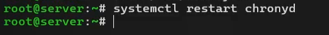
Figure 6: перезапуск службы chronyd,
server
Управление синхронизацией времени
На server настраиваем межсетевой экран.
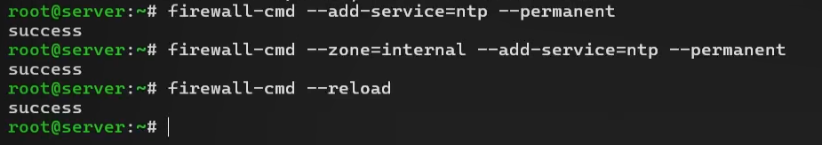
Figure 7: настройка межсетевого экрана,
server
Управление синхронизацией времени
На client вносим изменения в файл /etc/chrony.conf.
Figure 8: внесение изменений в
chrony.conf, client
Управление синхронизацией времени
На client перезапускаем службу chronyd.
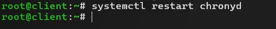
Figure 9: перезапуск службы chronyd,
client
Управление синхронизацией времени
Проверяем источники времени на server и client (видим, что после
внесения изменений в конфигурацию, иерархия синхронизации успешно
выстроилась; server продолжает синхронизировать часы с публичными
NTP-серверами, а client теперь синхронизирует часы с локальным сервером
www.aaglushenok.net).
Выполняем для server:
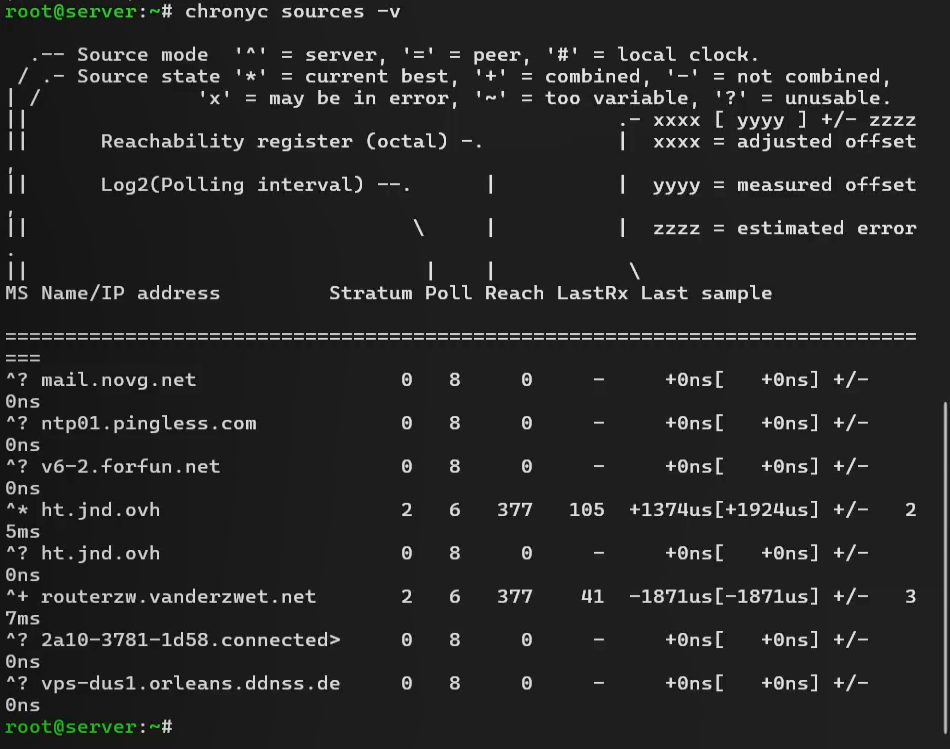
Figure 10: источники времени,
server
Управление синхронизацией времени
Выполняем для client:
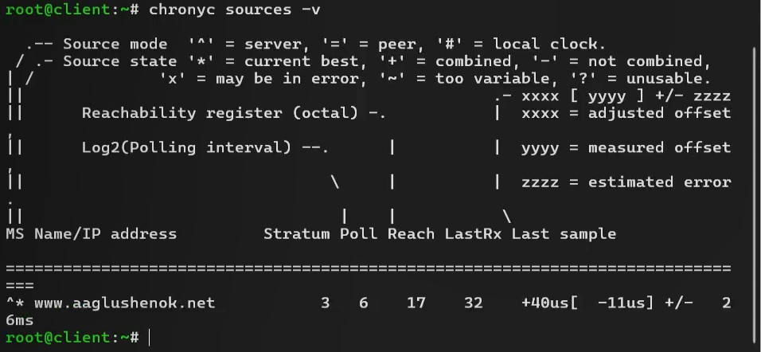
Figure 11: источники времени,
client
Управление синхронизацией времени
Смотрим подробную информацию о синхронизации.
Через tracking (видим, что узлы успешно синхронизированы; server
получает время из публичных NTP-серверов, и является источником
синхронизации для client).
Выполняем для server:
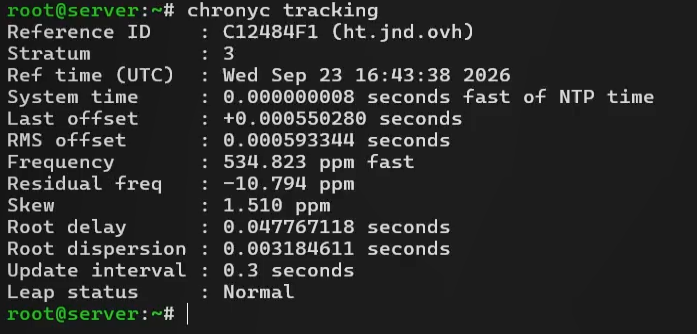
Figure 12: информация о синхронизации,
tracking
Управление синхронизацией времени
Выполняем для client:
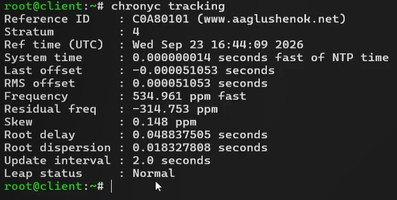
Figure 13: информация о синхронизации,
tracking
Управление синхронизацией времени
Смотрим подробную информацию о синхронизации.
Через sourcestats и clients (источник и клиент) (видим, что узлы
успешно синхронизированы; server является для client источником, а
client для server - клиентом).
Выполняем для server:
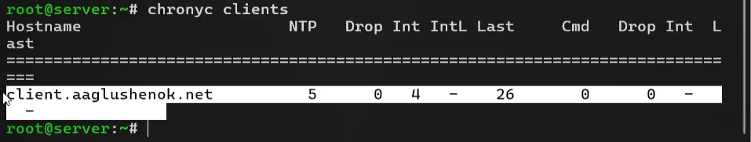
Figure 14: информация о синхронизации,
sourcestats и clients
Управление синхронизацией времени
Выполняем для client:
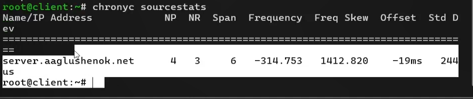
Figure 15: информация о синхронизации,
sourcestats и clients
Внесение изменений в настройки внутреннего окружения виртуальных
машин
Внесение изменений в настройки внутреннего окружения виртуальных
машин
На ВМ server переходим в каталог /vagrant/provision/server/ для
внесения изменений в настройки внутреннего окружения, создаем
необходимые каталоги и подкаталоги.
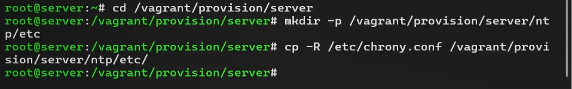
Figure 16: внесение изменений в настройки
внутреннего окружения, server
Внесение изменений в настройки внутреннего окружения виртуальных
машин
Создаем исполняемый файл ntp.sh в каталоге
/vagrant/provision/server, прописываем в нем
скрипт.
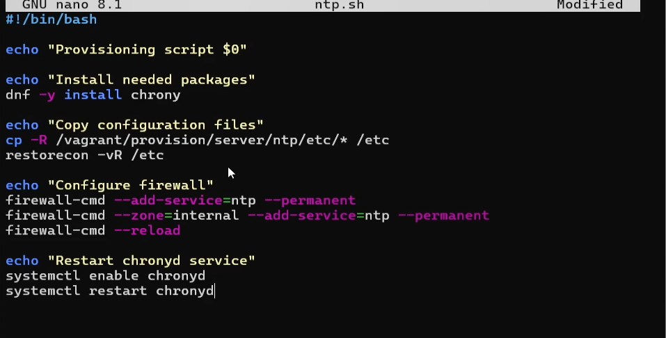
Figure 17: создание ntp.sh,
server
Внесение изменений в настройки внутреннего окружения виртуальных
машин
На ВМ client переходим в каталог /vagrant/provision/client/ для
внесения изменений в настройки внутреннего окружения, создаем
необходимые каталоги и подкаталоги.
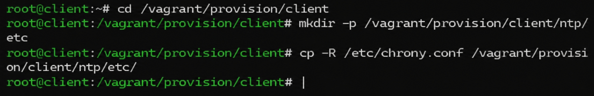
Figure 18: внесение изменений в настройки
внутреннего окружения, client
Внесение изменений в настройки внутреннего окружения виртуальных
машин
Создаем исполняемый файл ntp.sh в каталоге
/vagrant/provision/client, прописываем в нем
скрипт.
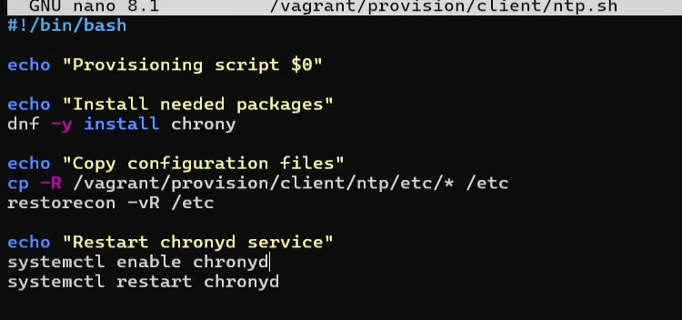
Figure 19: создание ntp.sh,
client
Внесение изменений в настройки внутреннего окружения виртуальных
машин
Для отработки созданных скриптов во время загрузки ВМ server и
client в конфигурационном файле Vagrantfile обновляем конфигурации для
server и client.
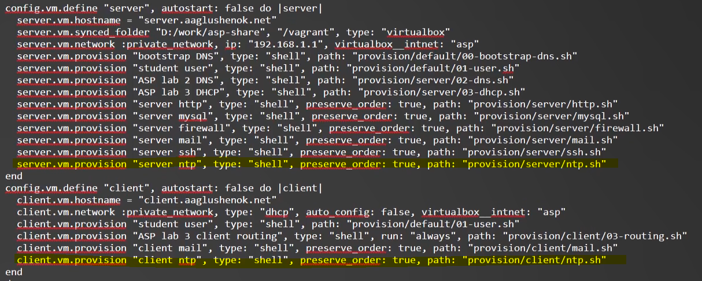
Figure 20: внесение изменений в
Vagrantfile
Внесение изменений в настройки внутреннего окружения виртуальных
машин
Проверяем Vagrantfile на отсутствие синтаксических ошибок.
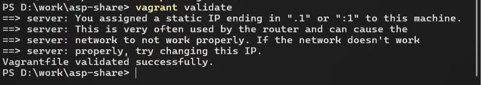
Figure 21: проверка
Vagrantfile
Выводы
Выводы
В ходе выполнения лабораторной работы № 12 мне удалось приобрести
навыки по управлению системным временем и настройке синхронизации
времени.
Список литературы
Список литературы
IETF. RFC 5905: Network Time Protocol Version 4: Protocol and
Algorithms Specification [Электронный ресурс]. — URL:
https://datatracker.ietf.org/doc/html/rfc5905 (дата обращения:
21.11.2026).
Red Hat. Configuring NTP Using the chrony Suite [Электронный
ресурс]. — URL:
https://docs.redhat.com/en/documentation/red_hat_enterprise_linux/9/html/configuring_basic_system_settings/configuring-ntp-using-the-chrony-suite_configuring-basic-system-settings
(дата обращения: 21.11.2026).